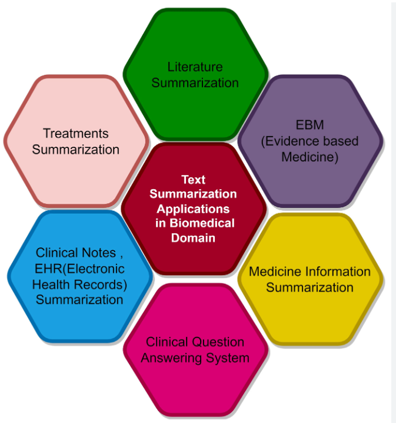
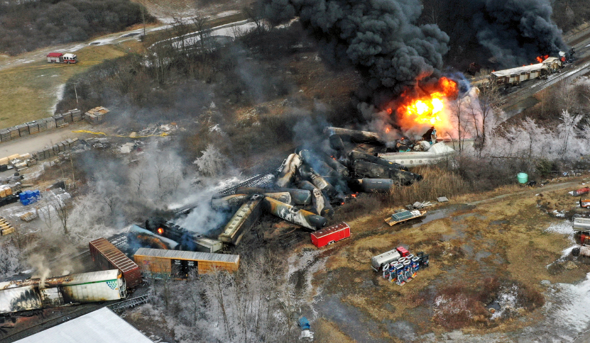
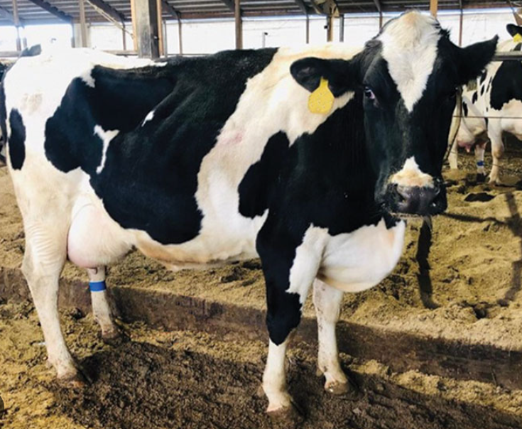
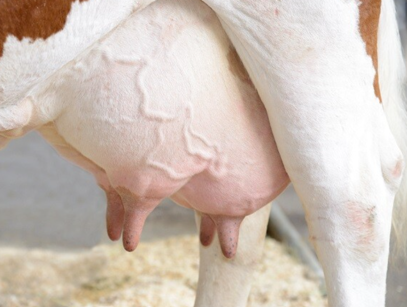

Generate JSON structure compatible with Restful APIs for several CRUD operations to rapidly build and
maintain applications using LLMs and LangChain framework.
Generated python scripts for scraping of web pages to prepare custom training data. Developed python scripts to interact with chatGPT using API by giving appropriate prompts to generate
questions and answers, multiple examples for each question and eventually nlu.yml, stories.yml, and domain.yml
files for training RASA model.

Built various text classification models of machine learning and deep learning such as traditional models
(Decision tree, Random forest, XGBoost, Naive bayes, SVM, KNN) and Transformer models (BERT and XLNet
classifiers) and measured performance metrics. Built instruction based fine tuned large language model (LLM) using prompt engineering techniques.

Performed Data profiling, EDA, and Data visualization in Python. Involved in ETL process including major steps such as loading the cleaned data into S3 bucket, connecting
mySQLto AWSRDS,creating a data model using star schema, creating OLTP and OLAP databases. Concluded that more spill incidents occurred in counties with more manufacturing firms.

Applied transfer learning technique to use pre-trained GoogleNet model. Passed 1042 input images having cow-stall numbers and their bounding box coordinates as input to this model. Trained this model for 500 epochs and predicted the results of 261 unseen images.

Built a CNNmodelin Python using Pytorch library for performing Image Classification to assess disease severety. UsedOpenCVlibrary for reading and resizing images.